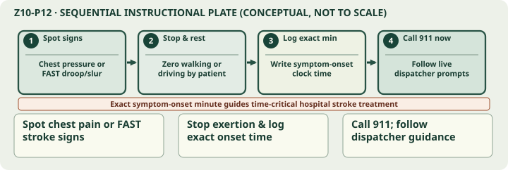

Z10-P12 · Wilderness medicine · New manuscript
Spot chest pain and stroke warning signs for immediate EMS activation
Treat sudden cardiac or stroke warning signs as time-critical emergencies rather than hiking fatigue.
When it applies · Adults experiencing unexplained chest pressure, jaw/arm pain, shortness of breath, sudden facial droop, arm weakness, or slurred speech.
Equipment · Communication device, insulating ground pad, shade/shelter, and written symptom-onset time log.

Actions
- Stop all activity immediately, seat or lay the person comfortably at rest in shelter, and log the exact minute symptoms started (critical for hospital stroke treatment windows).[T02, M20]
- Check stroke signs rapidly—Face drooping on one side, Arm weakness or drift, Speech slurred or strange—and treat chest pressure, sweating, nausea, or sudden unexplained collapse as urgent cardiac/medical emergencies.[T02, M05]
- Call 911 immediately and follow dispatcher instructions; do NOT let the patient drive, walk out strenuously, or take unprescribed medications unless a 911 dispatcher or clinician specifically directs it.[T02, M20]
Failure recognition · Assuming chest tightness or slurred speech is just dehydration and having the person hike back to the trailhead.[T02, M05]
Verify · Confirm exact symptom-onset time is written down, exertion has stopped, and emergency transport is inbound.[T02, M20]
Stop or change course · Any loss of consciousness or abnormal breathing transitions immediately to 911 dispatcher-guided CPR and AED retrieval.[M03, T02]
Evidence and editorial notes
- M03 · American Red Cross · CPR Steps and Emergency Response (current web edition)
- Section: Check, Call, Care; Unresponsive Person Without Normal Breathing · Conditions: Unresponsive person not breathing normally; lay responder with EMS activation
Support: Verify scene safety, check responsiveness and normal breathing, call 911 and retrieve an AED if available, and begin dispatcher-guided or trained CPR.
Limitations: Lay text reference cannot substitute for hands-on certified CPR/AED training. · Conflicting evidence: None; aligns with AHA/ARC bystander guidance.
Editorial note: Distinguishes lay activation and dispatcher-guided CPR from advanced life support. · Specialist reviewer: EMS and resuscitation specialist
Primary source · checked 2026-11-24 - M05 · NIH / MedlinePlus · Shock (current web edition)
- Section: Recognizing Circulatory Shock and Positioning · Conditions: Injured or ill patient with pale cool clammy skin, rapid weak pulse, confusion, or dizziness
Support: Treat suspected shock as a life-threatening emergency: call 911, control external bleeding, keep the person warm and insulated from cold ground, and do not give food or drink.
Limitations: Field responders cannot diagnose internal hemorrhage or administer IV fluids. · Conflicting evidence: None; reinforces keeping suspected shock patients NPO and warm.
Editorial note: Core shock recognition and stabilization boundary in Z10. · Specialist reviewer: Emergency and wilderness medicine
Primary source · checked 2026-11-24 - M20 · NIH / MedlinePlus · First Aid Overview (current web edition)
- Section: Lay First-Aid Scope, Kit Readiness, and Documentation · Conditions: Pre-trip kit preparation and remote patient monitoring
Support: Maintain an inspected, unexpired first-aid kit matched to your actual training, keep written patient observations (time, responsiveness, breathing, symptoms, interventions) for EMS handoff, and practice skills in certified courses.
Limitations: Carrying advanced medical instruments without clinical training adds risk rather than capability. · Conflicting evidence: None; aligns with ARC and NPS-K.
Editorial note: Anchors kit sizing, SOAP-style lay observation logs, and scope-of-practice cards. · Specialist reviewer: Wilderness EMS and clinical education
Primary source · checked 2026-11-24 - T02 · American Red Cross · First Aid Steps (current web edition)
- Section: First Aid Steps > Call 9-1-1 · Conditions: Lay emergency response to unresponsiveness, abnormal breathing or severe bleeding
Support: Activate EMS and get needed equipment. Follow dispatcher directions and act within training.
Limitations: Remote locations may delay EMS arrival, requiring sustained stabilization after activation. · Conflicting evidence: None; aligns with NPS-E.
Editorial note: Mandates early emergency activation and dispatcher adherence. · Specialist reviewer: EMS and wilderness medicine
Primary source · checked 2026-11-24
Source lineage · American Red Cross and NIH MedlinePlus; new manuscript · Classification · New manuscript.